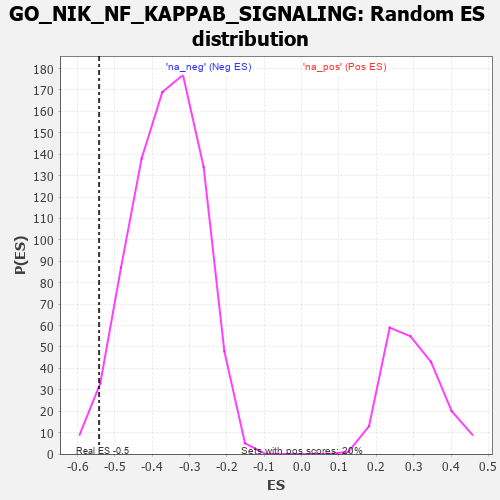

| | | Dataset | 7d |
| Phenotype | NoPhenotypeAvailable |
| Upregulated in class | na_neg |
| GeneSet | GO_NIK_NF_KAPPAB_SIGNALING |
| Enrichment Score (ES) | -0.5423165 |
| Normalized Enrichment Score (NES) | -1.4982017 |
| Nominal p-value | 0.0275 |
| FDR q-value | 0.19276024 |
| FWER p-Value | 1.0 |
Table: GSEA Results Summary
 Fig 1: Enrichment plot: GO_NIK_NF_KAPPAB_SIGNALING
Fig 1: Enrichment plot: GO_NIK_NF_KAPPAB_SIGNALING
Profile of the Running ES Score & Positions of GeneSet Members on the Rank Ordered List
| PROBE | GENE SYMBOL | GENE_TITLE | RANK IN GENE LIST | RANK METRIC SCORE | RUNNING ES | CORE ENRICHMENT | | 1 | BCL3 | | | 202 | 1.047 | 0.0139 | No |
| 2 | PDCD4 | | | 941 | 0.497 | -0.0605 | No |
| 3 | AKT1 | | | 1040 | 0.476 | -0.0550 | No |
| 4 | PSMD7 | | | 1152 | 0.454 | -0.0519 | No |
| 5 | PSMD2 | | | 1181 | 0.450 | -0.0386 | No |
| 6 | PSMD4 | | | 1811 | 0.335 | -0.1052 | No |
| 7 | NFAT5 | | | 1856 | 0.326 | -0.0985 | No |
| 8 | PSMD6 | | | 1858 | 0.326 | -0.0864 | No |
| 9 | BMP7 | | | 2107 | 0.290 | -0.1068 | No |
| 10 | PSME4 | | | 2143 | 0.285 | -0.1005 | No |
| 11 | PSMF1 | | | 2251 | 0.268 | -0.1039 | No |
| 12 | PSMD5 | | | 2560 | 0.218 | -0.1346 | No |
| 13 | SASH1 | | | 2682 | 0.201 | -0.1423 | No |
| 14 | PHB2 | | | 2712 | 0.197 | -0.1385 | No |
| 15 | CUL1 | | | 2735 | 0.193 | -0.1340 | No |
| 16 | PSMD9 | | | 3179 | 0.125 | -0.1852 | No |
| 17 | DDX3X | | | 3388 | 0.091 | -0.2080 | No |
| 18 | SKP1 | | | 3663 | 0.049 | -0.2407 | No |
| 19 | PPM1A | | | 3953 | 0.002 | -0.2771 | No |
| 20 | PSME3 | | | 4280 | -0.056 | -0.3160 | No |
| 21 | ILK | | | 4510 | -0.096 | -0.3413 | No |
| 22 | EP300 | | | 4941 | -0.186 | -0.3885 | No |
| 23 | PPM1B | | | 5422 | -0.300 | -0.4377 | No |
| 24 | SPHK1 | | | 5576 | -0.339 | -0.4443 | No |
| 25 | PSMD1 | | | 5674 | -0.367 | -0.4427 | No |
| 26 | TLR2 | | | 5761 | -0.395 | -0.4387 | No |
| 27 | CALR | | | 6077 | -0.499 | -0.4597 | No |
| 28 | BIRC3 | | | 6366 | -0.603 | -0.4733 | No |
| 29 | MALT1 | | | 6432 | -0.634 | -0.4577 | No |
| 30 | EGFR | | | 6708 | -0.765 | -0.4637 | No |
| 31 | CYLD | | | 7333 | -1.206 | -0.4970 | Yes |
| 32 | LITAF | | | 7572 | -1.511 | -0.4702 | Yes |
| 33 | TRAF4 | | | 7573 | -1.514 | -0.4134 | Yes |
| 34 | NLRC3 | | | 7574 | -1.515 | -0.3565 | Yes |
| 35 | TRAF6 | | | 7818 | -2.157 | -0.3061 | Yes |
| 36 | TRAF2 | | | 7861 | -2.481 | -0.2182 | Yes |
| 37 | PSMD3 | | | 7907 | -2.887 | -0.1155 | Yes |
| 38 | PSMD8 | | | 7931 | -3.286 | 0.0050 | Yes |
Table: GSEA details [plain text format]

Fig 2: GO_NIK_NF_KAPPAB_SIGNALING: Random ES distribution
Gene set null distribution of ES for GO_NIK_NF_KAPPAB_SIGNALING